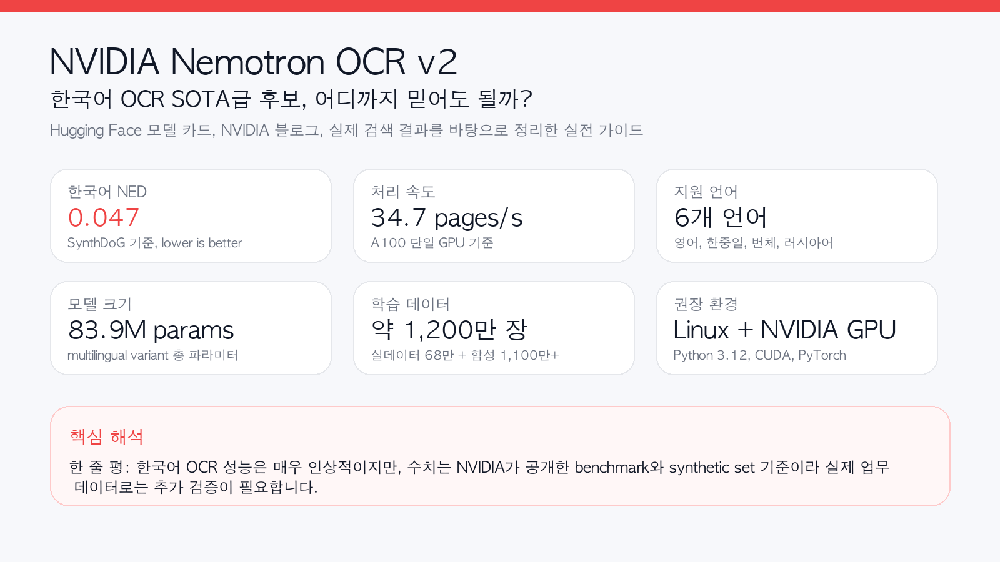
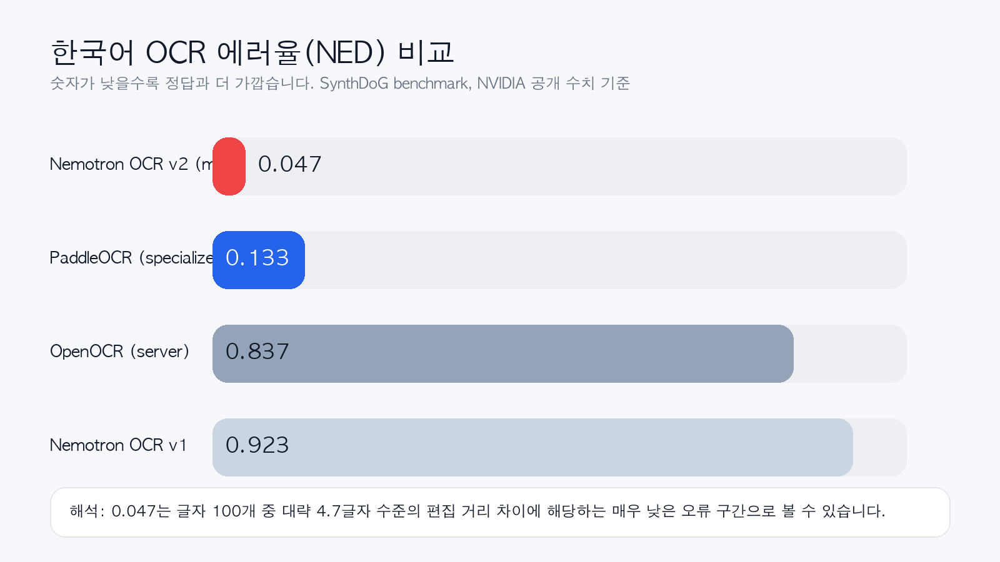
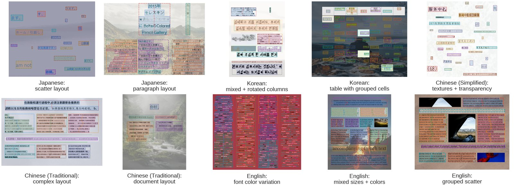
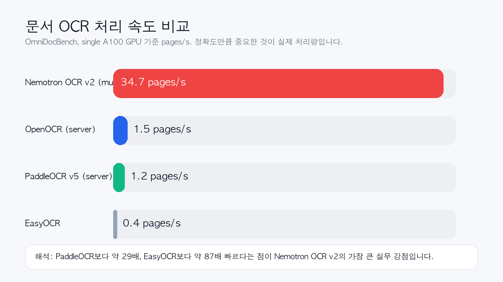
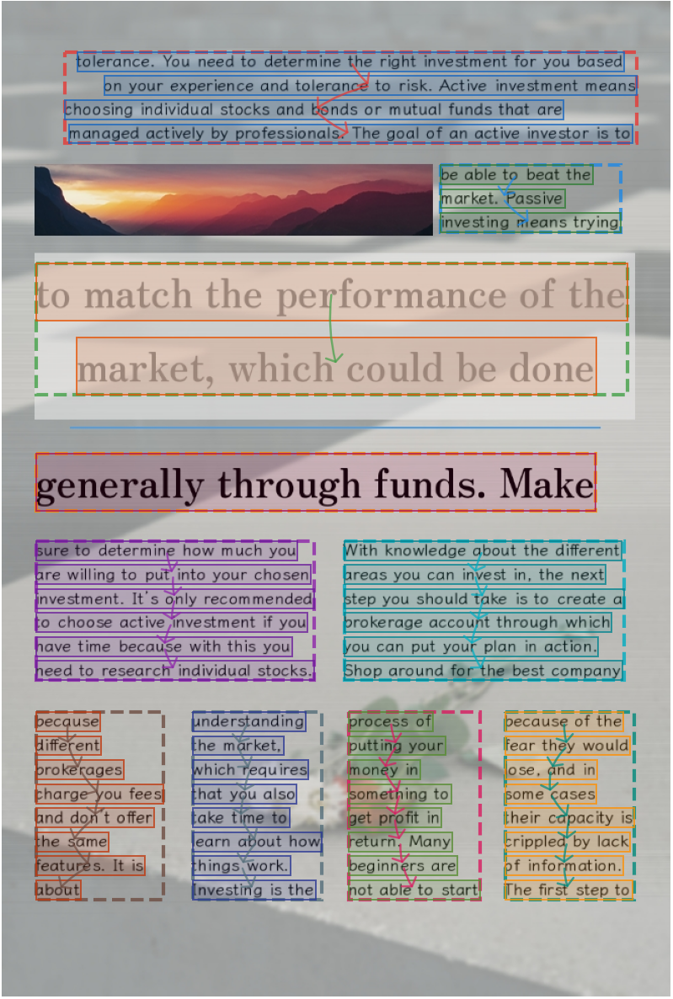

원문 및 참고: Hugging Face 모델 카드, NVIDIA/Hugging Face 블로그, Quickstart, 관련 Threads 글

한 줄 요약
Nemotron OCR v2는 한국어 OCR에서도 매우 강한 결과를 보인 NVIDIA의 오픈 모델입니다. 특히 공개된 SynthDoG 벤치마크에서 한국어 NED가 0.047로 제시되어, PaddleOCR specialized의 0.133보다 낮았습니다. 다만 이 숫자는 NVIDIA가 공개한 synthetic benchmark 기준이므로, 실제 업무 문서에서도 그대로 SOTA라고 단정하기보다는 SOTA급 후보, 혹은 한국어 OCR에서 매우 강력한 공개 모델이라고 부르는 편이 정확합니다.
왜 갑자기 다들 Nemotron OCR v2를 말할까?
이번 모델이 주목받는 이유는 단순히 “새 OCR 모델이 나왔다” 수준이 아니기 때문입니다. 실제 검색 결과와 Threads 요약에서 반복해서 등장하는 포인트는 딱 3가지였습니다.
- 한국어 성능 수치가 유난히 강하다
- 한국어 NED 0.047
- PaddleOCR specialized 0.133보다 낮음
- 속도가 비정상적으로 빠르다
- 단일 A100 기준 34.7 pages/s
- 핵심 메시지가 명확하다
- NVIDIA가 직접 남긴 문장, “The Problem: Data, Not Architecture.”
즉, 이 모델의 포인트는 “OCR 아키텍처를 살짝 바꿨다”가 아니라, 다국어 OCR의 성패는 결국 데이터가 좌우한다는 메시지를 아주 강하게 던졌다는 데 있습니다.
Nemotron OCR v2는 어떤 모델인가?
Nemotron OCR v2는 단일 OCR 엔진이라기보다, 아래 3개 모듈이 결합된 end-to-end OCR 파이프라인에 가깝습니다.
- Text Detector: 텍스트 위치를 찾음
- Text Recognizer: 찾은 영역의 글자를 읽음
- Relational Model: 읽기 순서, 블록 관계, 레이아웃 구조를 추론함
NVIDIA가 공개한 구조 설명에 따르면:
- Detector backbone: RegNetX-8GF
- Recognizer: Transformer 기반 시퀀스 인식기
- Relational module: 문서 레이아웃과 reading order 추론
특히 multilingual 버전은 단순 단어 OCR이 아니라 문장/라인 단위 처리와 구조 분석까지 고려한 쪽이라, 표, 차트, 인포그래픽, 복합 문서 같은 실제 업무 문서에 더 잘 맞는 설계입니다.
한국어 OCR 성능, 정말 SOTA라고 불러도 될까?
제 결론은 이렇습니다.
한국어 synthetic benchmark 기준으로는 SOTA급이라고 불러도 무리가 없지만, 모든 한국어 실문서 환경에서 절대적 SOTA라고 단정하는 건 아직 이릅니다.
왜냐하면 NVIDIA가 모델 카드에서 공개한 한국어 직접 수치는 SynthDoG 기준이기 때문입니다.

한국어 NED 비교 (SynthDoG, lower is better)
| 모델 | 한국어 NED |
|---|---|
| Nemotron OCR v2 (multilingual) | 0.047 |
| PaddleOCR (specialized) | 0.133 |
| OpenOCR (server) | 0.837 |
| Nemotron OCR v1 | 0.923 |
이 표만 보면 메시지는 명확합니다.
- Nemotron OCR v1은 한국어에서 사실상 거의 못 읽는 수준에 가까웠습니다.
- PaddleOCR specialized는 꽤 강합니다.
- 그런데 Nemotron OCR v2 multilingual은 여기서 한 번 더 크게 내려갑니다.
즉, **“한국어도 지원”**이 아니라 “한국어에서 꽤 잘 읽는다” 쪽에 더 가깝습니다.
다만 조심할 점도 있습니다.
- 이 수치는 NVIDIA 공개 benchmark입니다.
- 한국어 실문서 전용 공개 리더보드 전체를 가져와 비교한 것은 아닙니다.
- OmniDocBench 표는 영어, 중국어, mixed 문서 중심이라 한국어 실문서 일반화 성능을 직접 보장하진 않습니다.
그래서 표현을 조금 정교하게 해야 합니다.
가장 정확한 표현
- 공개된 synthetic benchmark 기준 한국어 OCR SOTA급
- 한국어를 포함한 다국어 OCR에서 현재 가장 인상적인 오픈 모델 중 하나
- 실무 투입 전에는 내 문서셋으로 재검증이 필요한 모델
이 정도가 가장 균형 잡힌 평가입니다.
NED가 뭐길래 0.047에 다들 놀라는가?
OCR 글을 읽다 보면 CER, WER, accuracy와 함께 NED가 자주 등장합니다.
NED는 Normalized Edit Distance, 즉 정규화된 편집 거리입니다.
쉽게 말하면,
- 정답 텍스트와
- 모델이 읽어낸 텍스트 사이의 차이를
- 문자열 길이로 정규화해서 보는 지표입니다.
보통 직관적으로는 이렇게 이해하면 됩니다.
NED = 편집거리(Edit Distance) / 더 긴 문자열 길이여기서 편집거리는 아래 세 연산 횟수입니다.
- 삽입
- 삭제
- 치환
예를 들어 정답이 대한민국인데 OCR 결과가 대힌민국이면, 한 글자가 잘못 읽힌 것이므로 편집거리는 1입니다.
NED는 낮을수록 좋다
Nemotron OCR v2 문서와 OmniDocBench 표는 lower is better 기준입니다.
- 0.000: 완벽히 일치
- 0.050: 거의 맞음
- 0.100: 눈에 띄는 오인식이 조금 있음
- 0.500 이상: 결과가 많이 틀렸을 가능성 큼
- 0.900 수준: 사실상 거의 다른 문자열
그래서 한국어 NED 0.047은 꽤 강한 숫자입니다. 아주 거칠게 말하면, 글자 100개를 읽을 때 편집거리 기준으로 약 4.7 수준의 차이만 난다는 뜻에 가깝습니다.
왜 헷갈리는가?
일부 자료나 라이브러리는 1 - NED 형태를 accuracy처럼 보여주기도 합니다. 그래서 같은 “normalized edit distance”라는 말을 보더라도,
- 어떤 문서는 낮을수록 좋다
- 어떤 구현은 높을수록 좋다
처럼 보일 수 있습니다.
이번 Nemotron OCR v2 글에서는 NVIDIA가 표에 명시한 방식, 즉 낮을수록 좋은 NED로 이해하면 됩니다.
이 모델이 강한 이유, NVIDIA는 왜 “Data, Not Architecture”라고 했을까?
이번 글에서 제가 가장 흥미롭게 본 부분은 바로 여기입니다.
NVIDIA는 Nemotron OCR v2의 성능 향상 핵심을 새로운 마법 같은 아키텍처보다 데이터 전략에 두고 있습니다.
공개된 학습 데이터 설명을 보면 대략 이렇습니다.
- 총 학습 이미지 수: 약 1,200만 장
- 실데이터: 약 68만 장
- 합성 데이터: 1,100만 장 이상
- 언어: 영어, 일본어, 한국어, 러시아어, 중국어(간체/번체)
합성 데이터에는 다음이 포함됩니다.
- 렌더링된 다국어 문서 페이지
- 차트와 인포그래픽 텍스트
- 테이블 이미지
- 손글씨 문서
- 열화된 historical document 스타일 데이터
즉, 한국어 OCR 성능이 갑자기 좋아진 이유를 단순히 모델 구조 변경으로 보기보다, 한국어를 포함한 다국어 synthetic data를 매우 크게 밀어 넣은 결과로 보는 게 맞습니다.

Hugging Face Space에 공개된 Nemotron OCR v2 예시 이미지 모음이 관점은 교육적으로도 꽤 중요합니다. OCR 성능 개선은 모델만 키운다고 해결되지 않고, 결국 문자 체계별 데이터 설계와 실제 문서 분포를 얼마나 잘 반영했는가가 핵심이라는 뜻이기 때문입니다.
속도는 어느 정도인가?
정확도만 강조하면 실무에서는 반쪽짜리입니다. 문서 OCR은 결국 처리량이 중요합니다.

OmniDocBench 처리 속도 (single A100)
| 모델 | 처리 속도 |
|---|---|
| Nemotron OCR v2 (multilingual) | 34.7 pages/s |
| OpenOCR (server) | 1.5 pages/s |
| PaddleOCR v5 (server) | 1.2 pages/s |
| EasyOCR | 0.4 pages/s |
이 수치가 맞다면 Nemotron OCR v2의 장점은 아주 분명합니다.
- PaddleOCR v5 server 대비 약 29배 빠름
- EasyOCR 대비 약 87배 빠름
물론 이 역시 NVIDIA 공개 benchmark 기준입니다. 그래도 방향성은 분명합니다. 이 모델은 정확도만 챙긴 연구용 OCR이 아니라, 실제 대량 처리용 production OCR을 노리고 설계된 모델입니다.
Nemotron OCR v2 multilingual과 English 버전 차이
Nemotron OCR v2는 두 가지 버전으로 공개됩니다.
1) v2_english
- 영어 최적화
- word-level region handling
- 총 파라미터 약 53.8M
2) v2_multilingual
- 영어, 한국어, 일본어, 러시아어, 중국어(간체/번체) 지원
- line-level region handling
- 총 파라미터 약 83.85M
세부적으로 multilingual recognizer가 더 큽니다.
| 항목 | v2_english | v2_multilingual |
|---|---|---|
| Transformer layers | 3 | 6 |
| Hidden dimension | 256 | 512 |
| FFN width | 1024 | 2048 |
| Max sequence length | 32 | 128 |
| Charset size | 855 | 14,244 |
| 총 파라미터 | 53.83M | 83.85M |
한국어 OCR이 목적이라면 당연히 multilingual 버전을 쓰는 편이 맞습니다.
Hugging Face에서 Nemotron OCR v2 사용하는 방법
Nemotron OCR v2는 Hugging Face 모델 카드 기준으로 Python 3.12 + CUDA + PyTorch + NVIDIA GPU 환경을 권장합니다.
1. 기본 설치
git lfs install
git clone https://huggingface.co/nvidia/nemotron-ocr-v2
cd nemotron-ocr-v2
# 예시: CUDA 12.8용 PyTorch
pip install torch torchvision --index-url https://download.pytorch.org/whl/cu128
# CUDA extension 빌드를 위해 no-build-isolation 권장
pip install --no-build-isolation -v .여기서 중요한 점은 이 패키지가 CUDA C++ extension을 빌드한다는 것입니다. 그래서 PyTorch CUDA 버전과 시스템의 nvcc major version이 맞아야 합니다.
예를 들어,
torch+cu128이면- 시스템 CUDA toolkit도 12.x 계열이어야 안전합니다.
2. 설치 확인
python -c "from nemotron_ocr.inference.pipeline_v2 import NemotronOCRV2; print('OK')"3. 가장 기본적인 추론 예시
from nemotron_ocr.inference.pipeline_v2 import NemotronOCRV2
# 기본값은 multilingual
ocr = NemotronOCRV2()
predictions = ocr("ocr-example-input-1.png", merge_level="paragraph")
for pred in predictions:
print(
pred["text"],
pred["confidence"],
pred["left"], pred["upper"], pred["right"], pred["lower"]
)4. 영어 전용 모델 사용
from nemotron_ocr.inference.pipeline_v2 import NemotronOCRV2
ocr_en = NemotronOCRV2(lang="en")
preds = ocr_en("sample.png")5. 로컬 체크포인트로 실행
from nemotron_ocr.inference.pipeline_v2 import NemotronOCRV2
ocr_local = NemotronOCRV2(model_dir="./v2_multilingual")
preds = ocr_local("sample.png")6. merge level 조절
ocr("sample.png", merge_level="word")
ocr("sample.png", merge_level="sentence")
ocr("sample.png", merge_level="paragraph") # 기본값7. 더 가볍게 돌리는 모드
# detector only: 박스만 뽑고 텍스트 인식은 생략
ocr_det = NemotronOCRV2(detector_only=True)
# relational model 생략: 더 빠르지만 읽기 순서/구조 정보는 약해짐
ocr_fast = NemotronOCRV2(skip_relational=True)Docker로도 가능하다
Hugging Face 문서에는 Docker 방식도 안내되어 있습니다.
docker run --rm --gpus all nvcr.io/nvidia/pytorch:25.09-py3 nvidia-smi
docker compose run --rm nemotron-ocr \
bash -lc "python example.py ocr-example-input-1.png --merge-level paragraph"즉, 로컬 호스트에 이것저것 직접 깔기 싫다면 NVIDIA Container Toolkit이 잡힌 Docker 환경으로 빠르게 시험해볼 수 있습니다.
권장 하드웨어 사양은?
모델 카드에서 사실상 요구하는 조건은 아래에 가깝습니다.
필수에 가까운 조건
- OS: Linux amd64
- Python: 3.12
- GPU: NVIDIA GPU
- CUDA toolkit:
nvcc가 PATH에 있어야 함 - Framework: PyTorch
문서에 명시된 지원 GPU 계열
- NVIDIA Ampere
- NVIDIA Hopper
- NVIDIA Lovelace
- NVIDIA Blackwell
문서에 예시로 언급된 하드웨어
- H100 PCIe / SXM
- A100 PCIe / SXM
- L40S
- L4
- A10G
- H200 NVL
- B200
- RTX PRO 6000 Blackwell Server Edition
즉, Mac에서 대충 pip install 해서 가볍게 돌리는 타입의 모델은 아닙니다. 이 모델은 처음부터 Linux + CUDA + NVIDIA GPU 서버를 겨냥하고 있습니다.
이 모델은 어떤 곳에 잘 맞을까?
Nemotron OCR v2는 아래 시나리오에서 특히 매력적입니다.
1. 다국어 문서 수집 파이프라인
- 영문 문서만이 아니라 한국어, 일본어, 중국어까지 함께 다루는 경우
- 문서 OCR 후 RAG 인덱싱을 해야 하는 경우
2. PDF/문서 인텔리전스
- 표, 차트, 인포그래픽, 블록 문서가 많을 때
- reading order와 구조 정보가 중요할 때
3. 대량 배치 처리
- 정확도도 중요하지만 처리 속도가 더 중요할 때
- 단순 데모가 아니라 production OCR ingest 파이프라인이 필요할 때
4. 에이전트 워크플로우
- OCR 결과를 그냥 텍스트로만 끝내는 것이 아니라
- 검색, 요약, 추출, 질의응답까지 연결해야 할 때

Hugging Face Space 예시. 텍스트 영역 탐지와 인식 결과를 함께 보여준다.실무 관점에서 아쉬운 점도 있다
좋은 점만 말하면 오히려 판단을 흐립니다. 저는 아래 4가지는 꼭 같이 봐야 한다고 생각합니다.
1. 한국어 성능은 매우 좋아 보이지만, 공개 수치는 synthetic benchmark 중심이다
실제 학교 공문, 스캔 PDF, 사진 찍은 가정통신문, 세로쓰기 혼합 문서까지 다 잘 된다고 바로 단정하면 안 됩니다.
2. Mac 친화적이지 않다
Apple Silicon에서 가볍게 로컬 테스트하는 유형이 아니라, NVIDIA GPU 서버 기반 운영에 더 어울립니다.
3. 설치가 아주 가볍진 않다
CUDA extension 빌드가 들어가므로, Python 패키지 하나 툭 설치하는 느낌과는 다릅니다.
4. 문서 OCR 최적화 모델이지, 범용 VLM 대체재는 아니다
텍스트 추출과 구조화에는 강하지만, 복잡한 시각 추론 전체를 대신하는 모델로 보면 안 됩니다.
그래서 누구에게 추천할까?
추천하는 경우
- 한국어 포함 다국어 OCR이 필요하다
- PaddleOCR보다 더 공격적인 성능과 속도를 원한다
- RAG, 문서 검색, PDF 파이프라인을 만들고 있다
- NVIDIA GPU 서버 환경이 이미 있다
아직 지켜봐도 되는 경우
- Mac에서 개인용 OCR을 가볍게 돌리고 싶다
- 한국어 단일 문서만 다루고, 이미 PaddleOCR 파이프라인이 안정적이다
- benchmark보다 실제 배포 검증이 더 중요하다
결론
Nemotron OCR v2는 오랜만에 나온 **“진짜 실무형 OCR 모델”**에 가깝습니다.
특히 한국어 관점에서 보면,
- 한국어 NED 0.047이라는 강한 수치가 있고
- 다국어 OCR 구조가 탄탄하며
- 처리량도 매우 공격적이고
- 문서 구조까지 고려한 설계라는 점에서
충분히 **“한국어 OCR SOTA급 후보”**라고 부를 만합니다.
다만 저는 이렇게 정리하고 싶습니다.
Nemotron OCR v2는 지금 당장 가장 흥미로운 한국어 OCR 오픈 모델 중 하나다. 하지만 진짜 승부는 내 문서셋에서 다시 확인해야 한다.
그게 benchmark를 실무로 번역할 때 가장 정직한 태도입니다.
FAQ
Q1. NED 0.047이면 정확도가 95.3%라는 뜻인가요?
정확히 같은 개념은 아닙니다. NED는 편집거리 기반 지표라서 문자 단위 accuracy와 1:1 대응하진 않습니다. 다만 매우 낮은 오류 구간이라는 해석은 가능합니다.
Q2. 한국어 OCR만 보면 PaddleOCR보다 무조건 낫나요?
공개된 SynthDoG 표에서는 그렇습니다. 하지만 실제 영수증, 스캔 품질, 손글씨, 기울기, 배경 노이즈 등 환경이 다르면 결과는 달라질 수 있으므로 반드시 자체 검증이 필요합니다.
Q3. MacBook에서도 바로 돌릴 수 있나요?
문서상 권장 환경은 Linux amd64 + NVIDIA GPU입니다. Mac에서 가볍게 돌리는 용도와는 거리가 있습니다.
Q4. 어떤 버전을 써야 하나요?
한국어가 목표라면 multilingual 버전을 쓰는 편이 맞습니다. English 전용 버전은 한국어용이 아닙니다.
Q5. OCR 이후에 RAG 파이프라인으로 연결하기 좋은가요?
좋습니다. bounding box, text, confidence, 구조 정보까지 함께 다룰 수 있어서, 단순 텍스트 추출보다 문서 청킹, citation, 레이아웃 보존 측면에서 유리합니다.